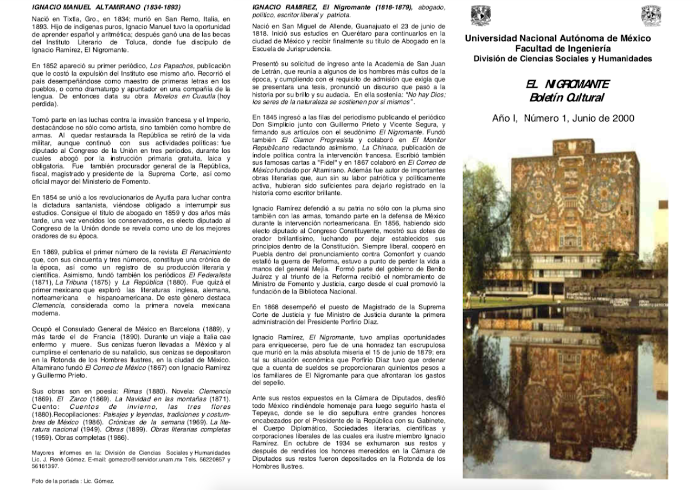

¿Quiénes somos?
Somos un equipo multidisciplinario iniciando con ingenieros (que nos ayudan a crear contenido para la revista), continuando con Filosofía y Letras (que nos auxilian en la edición y corrección de textos), siguiendo con Ciencias Políticas y Sociales (que apoyan a cubrir eventos y a realizar material audiovisual para nuestro canal de YouTube) así como el importante equipo de diseñadoras de la Facultad de Artes y Diseño (que gracias a su formación, diseñan una revista digna de competir dentro del mundo editorial). Estamos adscritos a la División de Ciencias Sociales y Humanidades de la Facultad de Ingeniería de la UNAM, y el pilar fundamental de la Revista son los estudiantes que actualmente realizan su servicio social.
Algo que siempre hemos querido enfatizar es que Nigromante es una revista en la que personas externas a la Facultad de Ingeniería pueden colaborar con textos originales y fotografías de su autoría. Todo lo que se ha publicado ha tenido como único motivo el compartir la cultura, las novedades tecnológicas, las retrospectivas de la historia, los problemas sociales que tenemos en la actualidad (o que fueron consecuencia de algún aspecto del pasado) y gran número de cosas más que sabemos que pueden tener injerencia en nuestra sociedad.
¿De dónde viene el nombre de "Nigromante"?
Viene del político, escritor, poeta, liberal mexicano y reconocido masón, Ignacio Ramírez “El Nigromante” (1818-1879). Considerado uno de los artífices más importantes del Estado laico mexicano.
Sus colaboraciones se distinguieron por ser encendidos artículos y agudos versos satíricos en donde hacía una terrible censura a los actos del gobierno conservador, abogando por la reforma del país en lo económico, religioso y político, lo que provocó que el periódico fuera suprimido y Ramírez, encarcelado.
HISTORIA
Nuestra historia comenzó con un boletín llamado El Nigromante, un tríptico tamaño carta. La primera publicación surgió en junio del año 2000, justo después de la huelga y paro de la UNAM de 1999. Fue fundado por el Lic. José René Gómez Rodríguez. El nombre de Nigromante viene del político, escritor y poeta liberal mexicano, reconocido masón, Ignacio Ramírez “El Nigromante” (1818-1879). Considerado uno de los artífices más importantes del Estado laico mexicano.
Aquel boletín siempre fue un medio de difusión en todos los aspectos, mismo que no se limitó a cuestiones ingenieriles, pues sus fundadores estaban convencidos de que podían mostrar que en la Facultad de Ingeniería no solo se realizaban cosas relacionadas con el área físico-matemática, sino que también se impartían asignaturas que pertenecían a las ciencias sociales y a las humanidades.
Hasta la fecha esta visión sigue siendo nuestra base y guía. Para 2016 se le dio la estructura de revista digital, que comenzó a publicarse digitalmente en la plataforma de ISSUU con el nombre de Nigromante, Revista cultural de la DCSyH.
En septiembre de 2018, gracias a la entrada al servicio social de alumnas de la Facultad de Artes y Diseño, se hizo un rediseño entero a la revista, desde la maquetación (disposición de los elementos como, secciones, texto, imágenes, vínculos, etc.) hasta el cabezal que nos da una identidad propia.
Edicion Marzo 2019
Edicion Abril 2019
Edicion Mayo 2019
Actualmente
Estamos adscritos a la División de Ciencias Sociales y Humanidades de la Facultad de Ingeniería de la UNAM, y el pilar fundamental de la revista son los estudiantes que actualmente realizan su servicio social.
Somos un equipo multidisciplinario que reúne a estudiantes de diversas Facultades:
Otro de nuestros puntos fuertes es que Nigromante es una revista en la que personas externas a la Facultad de Ingeniería (y a la Universidad en general) pueden colaborar con textos originales, fotografías o ilustraciones de su autoría. Todo lo que se ha publicado ha tenido como único motivo el compartir y difundir la cultura, las novedades tecnológicas, las retrospectivas de la historia, los problemas sociales que tenemos en la actualidad (o pasados que aún siguen vigentes) y una gran variedad de cosas más que sabemos que pueden tener lugar en nuestra sociedad.
Nota del autor
La revista es una sublevación contra los cánones que se tiene de los ingenieros. Somos más que matemáticas, tenemos actividades culturales muy variadas dentro y fuera de los muros de la Facultad, por ejemplo, la Feria Internacional del Libro del Palacio de Minería o la Orquesta Sinfónica de Minería.
La revista es una sublevación contra los cánones que se tiene de los ingenieros. Somos más que matemáticas, tenemos actividades culturales muy variadas dentro y fuera de los muros de la Facultad, por ejemplo, la Feria Internacional del Libro del Palacio de Minería o la Orquesta Sinfónica de Minería.
Escrito por Luis Alberto Santoyo Cruz y María Fernanda Carrisoza Zamora.